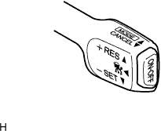
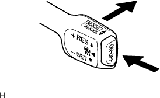
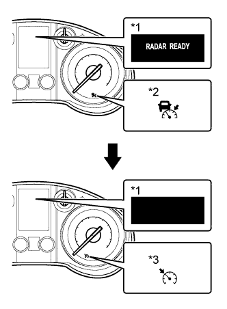

DYNAMIC RADAR CRUISE CONTROL SYSTEM > OPERATION CHECK |
| INPUT SIGNAL CHECK |
|  |
Connect the intelligent tester to the DLC3.
Check the cruise control switch (ON-OFF, CANCEL, -SET, +RES and MODE) using the Data List function in the intelligent tester.
| INSPECT MODE SWITCH |
|  |
Turn the engine switch on (IG).
Turn the cruise control switch on.
|  |
Push the cruise control switch to MODE for 1 second or more to change to constant speed control mode. Check that the multi-information display changes from displaying "RADAR READY" to a black screen.
Check that the cruise control indicator light (vehicle-to-vehicle distance control mode) turns off and the cruise control indicator light (constant speed control mode) turns on.
| *1 | Multi-information Display |
| *2 | Cruise Control Indicator Light (Vehicle-to-vehicle Distance Control Mode) |
| *3 | Cruise Control Indicator Light (Constant Speed Control Mode) |
| INSPECT STEERING PAD SWITCH ASSEMBLY |
Turn the engine switch on (IG).
Turn the cruise control switch on. Check that "RADAR READY" is indicated on the multi-information display and that the cruise control indicator light turns on.
Push the distance control switch of the steering pad switch assembly.
Check that the indication of the vehicle-to-vehicle distance, which is shown in the multi-information display in the combination meter assembly, changes from long to middle to short in that order.
| *1 | Steering Pad Switch Assembly (Distance Control Switch) | *2 | Multi-information Display |
| *3 | Long | *4 | Middle |
| *5 | Short | - | - |